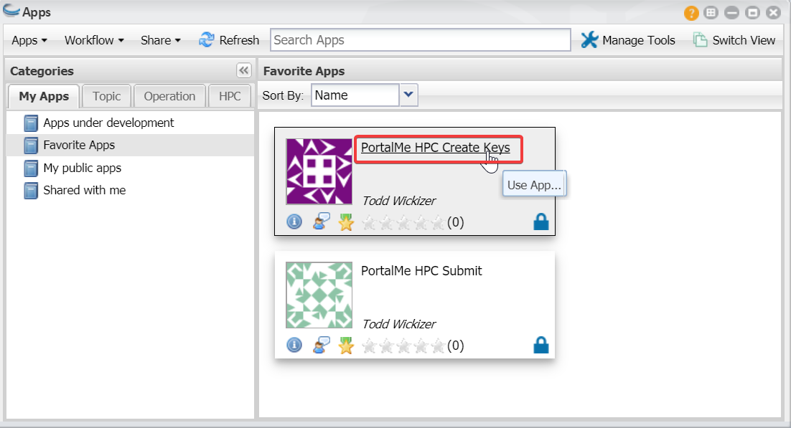
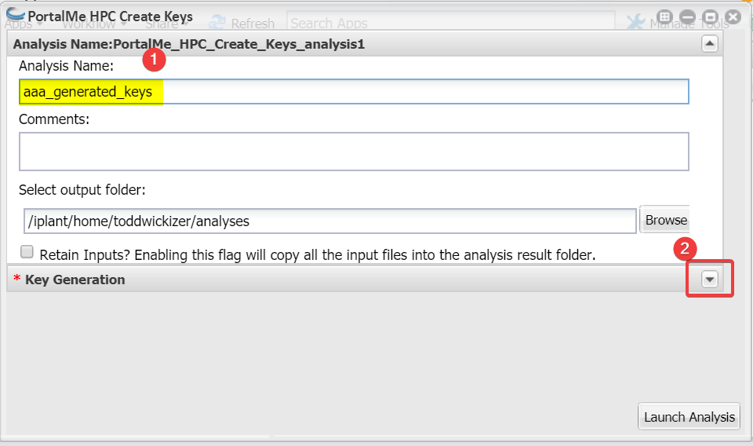
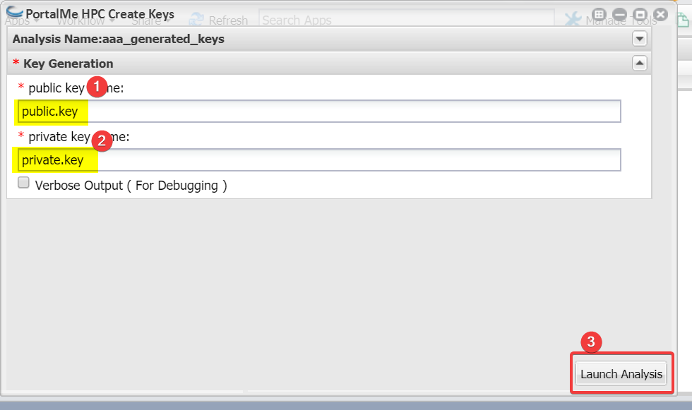
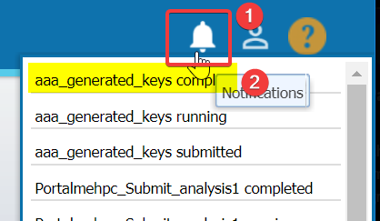
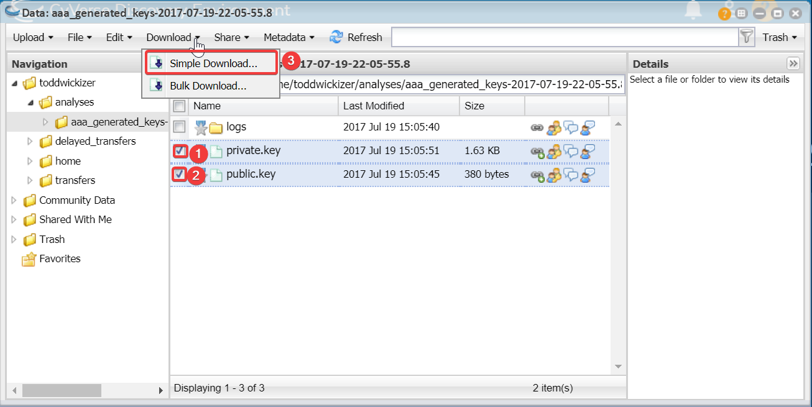
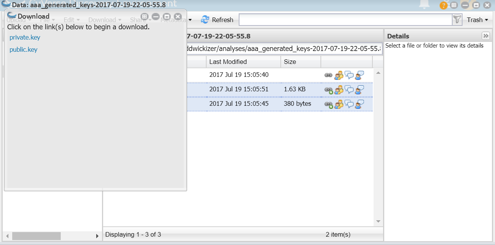

Generating Keys¶
Load up the discovery environment and search for “PortalMe”. You should see atleast two apps come up. Click the one that ends with “Create Keys”.
From here a window should pop up. The first step is to name the analysis. The name here isn’t too important but I normally give it a name that is easy to identify later. After you name it, expand the Key Generation section.
Here you are given the option of renaming your public and private key. Take notice of the name, but don’t change the name for now. Finally click “Launch Analysis”. This will take some time
You should immediately notice that the notification menu in the top right has a red circle by it, This is to indicate that your app has launched. Wait for the notifications menu to contain the “Completed” line before continuing.
- Next we are going to download our SSH keys to our local machine. Clear out all windows and head back to the home screen.
- Press Data
- Expand your User folder.
- Expand your Analysis folder.
4. Find and open the folder you created. In my case it’s called aaa_generated_keys. ignore 5 & 6 they are covered in the next step
Select both the private and the public key, then click download and do a simple download.
Finall click to download both of these files. Take a mental note of where you are downloading them to!
